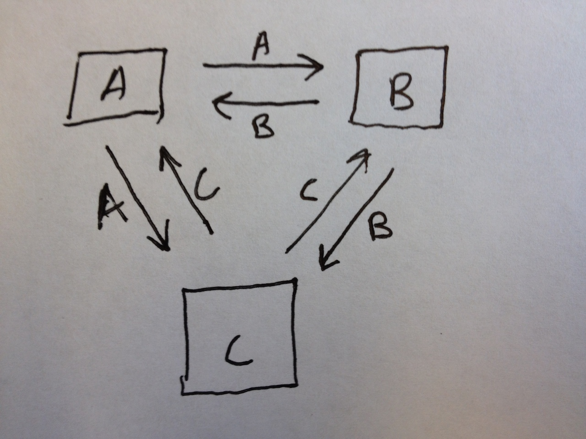
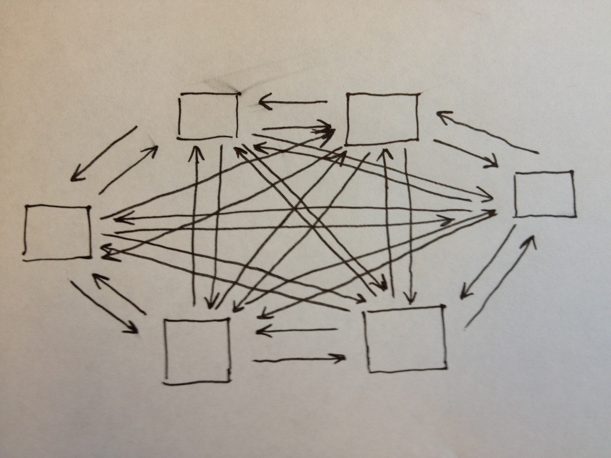
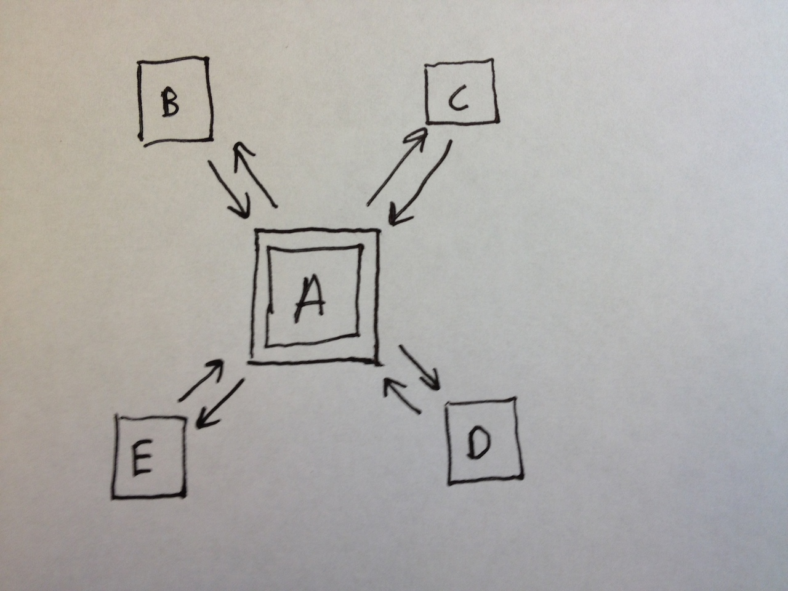
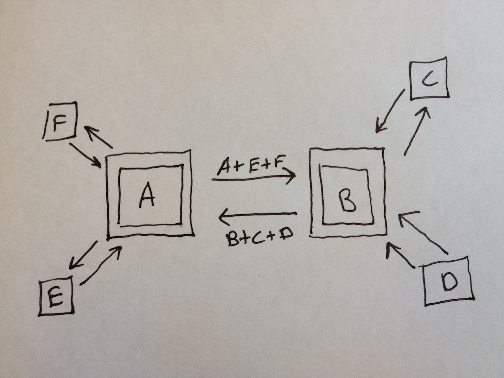
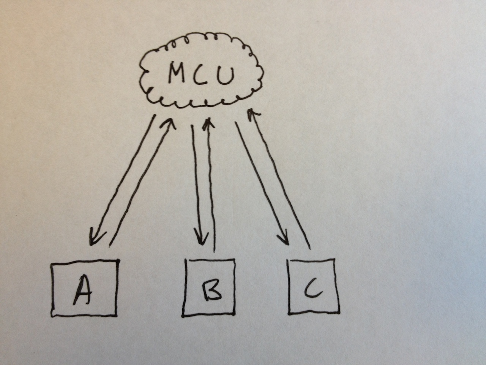
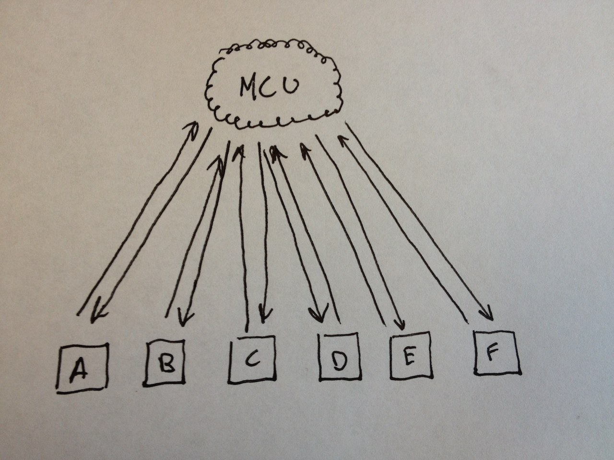
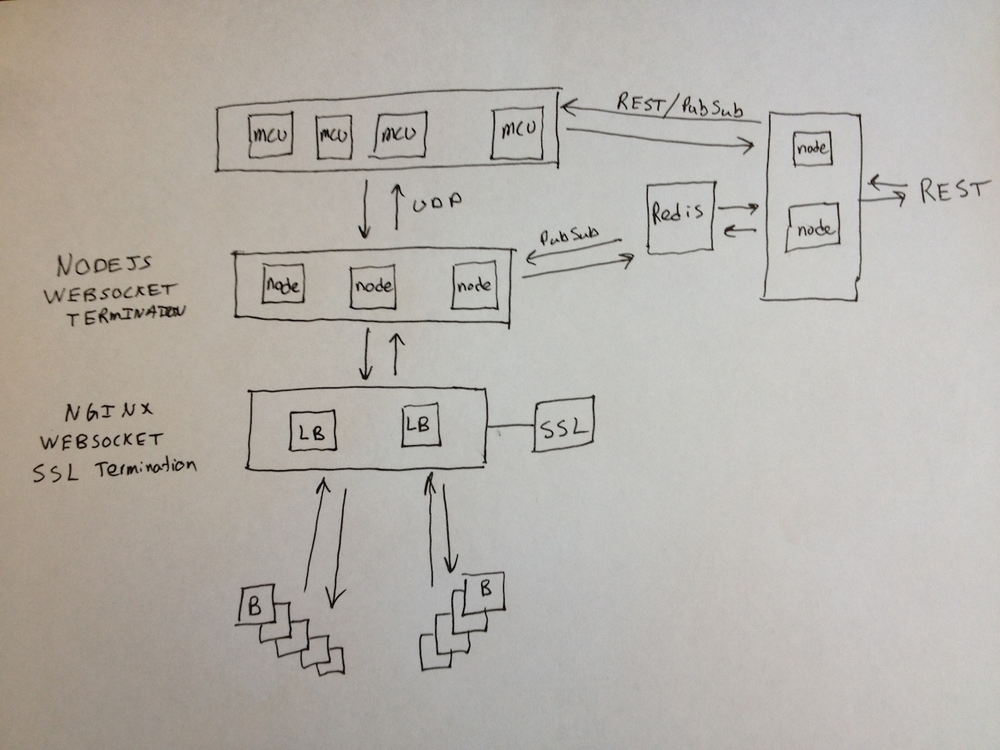
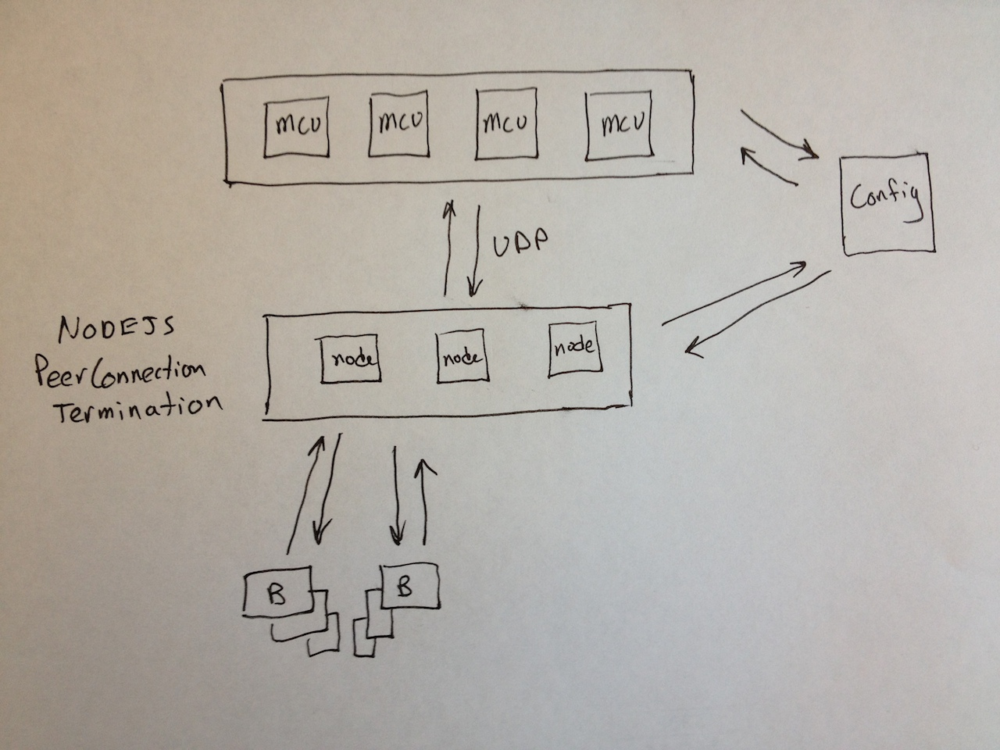

Scaling WebRTC Audio
for Gaming and other Applications
Ross Kukulinski / @rosskukulinski / SpeakIt.io
WebRTC is Peer-to-Peer (usually)
Peer-to-Peer is awesome
Until it isn't
Audio Vocabulary 101
Transcoding
Mixing
Acoustic echo cancelation (AEC)
Fully-Meshed Architecture

Larger Fully-Meshed Architecture

Star Mesh: Endpoint as Mixer

Multi-Star

Multipoint Control Unit (aka 'Media Server')

Larger MCU

Advantages of MCUs
- Offloads processing from endpoints
- Recording / Transcription
- Re-broadcast (podcasts, live gaming events, etc)
- Sound Effects / Text-to-Speech / Music
SpeakIt WebSocket Mixing Cluster

SpeakIt PeerConnection Mixing Cluster

So, that's cool. Now what?
Analyze your requirements
Roll your own vs Commercial
Open Source vs Off-the-shelf vs Hosted
Thanks!
Ross Kukulinski
ross at SpeakIt.io
@rosskukulinski